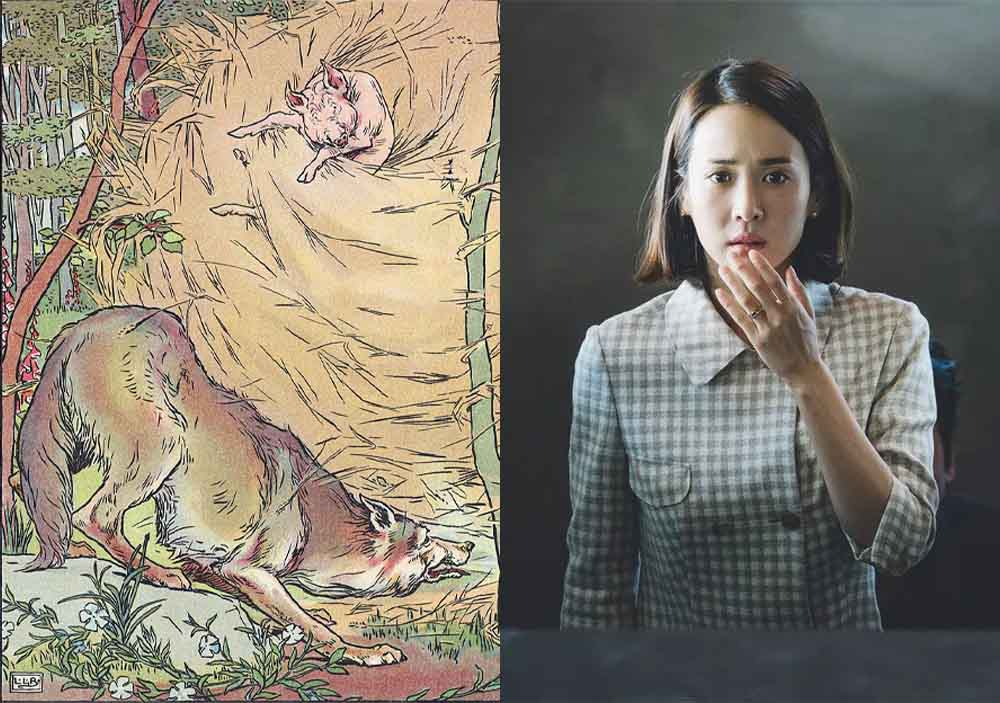

To begin, let’s look at the origin of film or more generally, the whole medium of screened information. I’ve always wondered about this medium. Shouldn’t we question why humanity ended up using moving pictures accompanied
with sounds as the primary form of information transfer? As a species, we currently spend an average of
seven hours per day looking at some sort of screen, whether it’s a phone, TV or computer. Granted, screens
aren’t anymore just for the purposes of entertainment. In the modern era, screens make up the backbone of basically everything, displaying numbers and information for all things that keep the world going. Yet, it’s interesting
to note that the first screen was invented purely for the purposes of entertainment. The first ever film to employ actors, the
Blacksmith Scene, was directed in 1893 by William Dickson, the inventor of the Kinetoscope. This
was a rudimentary device that displayed a film through a small peephole, designed for the purposes of making profit by providing customers with dynamic, visual entertainment. This film, along with several others, was available
for viewing in New York in the first ever motion picture house (i.e. a cinema) on 14 April 1894. For 25 cents, one could view an assortment of short films on any of the ten Kinetoscopes available.
The 34-second Blacksmith Scene officially starring Charles Kayser and John Ott (my respects to the third unmentioned actor) has a 6.2/10 star rating on IMDb based on 2.7k ratings.
As creatures of pleasure, perhaps it makes sense that the first use of a screen was for entertainment. Prior to Dickson’s Kinetoscope parlour, we humans were entertained in other ways. For visual entertainment, there were paintings.
Auditorily, there was music. For raw storytelling, there were books. And perhaps the best combination of the three were stage plays. The problem with all of these is that they were individually limited. Paintings can only provide
static visual information. Music was purely auditory. Books were limited by the ability of being able to read. And the stage play — though as effective as a motion picture for entertaining since it can tell a story visually and
auditorily — was a physically taxing medium; the actors and stage workers had to work hard every time they performed. The invention of the motion picture opened up a world of opportunity. Creators could carefully develop their content;
the pressures of live performance disappeared. And the viewers could experience the viscerality of a stage play on a screen time and time again, if they so wished. Motion pictures had become the ultimate form of entertainment.
Had the world taken another path in history, would we still have films? I think so. There is something fundamental about films. Films capitalise on the two easiest reproducible (and arguably the two most important) senses: sight and
hearing. Once the screen was made, anything could be projected onto the screen, as long as a filmmaker had the imagination to do so. And we have been experts at making sounds since the dawn of time. It is, after all, how we communicate.
Films are a logical step in entertainment precipitated by advances in technology.
Even on a fundamental level, humanity was always destined to end up with films. Films are just another medium for telling stories and expressing art, something we have been doing since the beginning. Both these things are inextricably
linked; by creating art, we implicitly establish a story and vice versa: storytelling is art. This duality - art and storytelling - is as old as humanity. Its earliest recorded form manifests itself as the cave painting. Yet, I’m sure
before cave paintings, prehistoric humans were still uttering anecdotes to each other in a primitive, faraway tongue of things that had happened, could have happened, and would happen. Storytelling and art define us as a species. And
films are the ultimate form of expressing these two things.
In our podcast covering the 2019 film Parasite, Patrick revealed a theory of his — the Knowledge Simulation. The Knowledge Simulation is what films do; as the name suggests, they simulate knowledge. More explanatorily, films explore and
demonstrate any idea or concept in a uniquely visceral way. In some ways, it is similar to Frank Jackson’s thought experiment
Mary’s Room but adapted to films. In our podcast, Patrick discusses this in relation to capitalism, a
primary theme of
Parasite. He purports that one could read all about capitalism, understanding its origin, how it works and examples of how it impacts people; however, that wouldn’t give one an innate understanding of capitalism. That
is what
Parasite does. In it, real people act out a story of the complex unfairness of capitalism, packed full with raw emotions.
Parasite puts the viewer in the boots of those affected by capitalism. Yes, it is true that Knowledge Simulations
can exist in other mediums such as books, but none of them simulate knowledge as powerfully as films. The unique combination of an ever-changing visual and auditory experience with real actors maximises the Knowledge Simulation.
What is the point of films? Such a question can only be subjectively answered but I’ll provide my own interpretation. To begin, think about what the purpose of a traditional story is. Let’s take
The Three Little Pigs as an example. This
English fable
continues to be adapted today, specifically for children, as it teaches a valuable lesson to younglings: hard work pays off. That’s how the pig who built the labour-intensive but sturdy brick house survives the wolf’s onslaught.
Though perhaps in this case slightly heavy-handed, these “morals of the story” form the basis of all folktales and are closely related to the cultural ideals of the society that created them. Such folktales exist in all civilisations across
all of human history. They both define the civilisation’s culture while also being one of the progenitors of that civilisation’s continuously emerging culture. As time goes on, new tales emerge to adapt to the times. I find the cautionary-tale
TV series
Black Mirror to be a good example of this.
So is the purpose of films to teach? I believe so. To teach is a vague term, but I do believe all films teach the viewer something. This is what we mean when we finish a movie and ask “what does it mean?” It may not necessarily be an overt
lesson like in The Three Little Pigs but it's something that the creators of the film intended for you to take away from it. However, I’m by no means saying all films do this well. Giving your viewer something to chew on is a skill in itself
and many films fall short on it or don’t even bother at all. Perhaps I should rephrase by saying that the purpose of all good films is to teach.

What do the historic fable The Three Little Pigs and the Oscar-winning Parasite have in common? Plot-wise: nothing. Storytelling-wise: everything.
This brings me on to my next point. Teaching alone is something that is done in a classroom, an environment associated for most with boredom and procrastination. A good teacher knows this; they must first engage their students in order to
facilitate effective teaching. In the same vein, a film must do the same. From this,
I believe there is one other purpose of films that is above teaching — to entertain. This is perhaps the most critical requirement of any film. It is, after all, how
motion pictures began. The 34-second Blacksmith Scene, too short to teach a lesson, was made purely for the sake of entertainment. Gaining pleasure is the foremost reason for any viewer to watch a film. Learning is great but enjoying ourselves
while learning is the greatest. Without a film first being entertaining, the fundamental meaning of it is lost. A boring film will never teach.
So that’s it: an exploration of the philosophy of film, or at least some aspects of film. Film is an inevitable consequence of our sentience and intelligence, and a natural, modern-era derivative of storytelling. Without it, humanity wouldn’t
be humanity. The fundamental purpose of film is to entertain. It’s a way to pass the time. Following that is film’s ability to teach. Both these things make up the purpose of films. Films have so much to teach us, but life is too short to watch
them all. Next time you decide to watch a film, put on a good one. Sit down and engross yourself in it. Understand it, learn from it but most importantly, enjoy it. ※